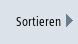
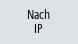
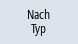
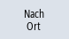
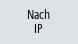
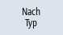
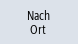
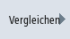
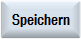

Mit Betätigung des Softkeys "Erreichbare Teilnehmer" wird die Liste der im Netzwerk erreichbaren Teilnehmer, an X120 und ggf. an X150, erstellt und angezeigt. Der Listeninhalt kann als aktuelle Topologie mit einer Solltopologie verglichen werden.
|
Hinweis
|
|
Handheld Terminals und EKS Identifikationssysteme werden für die Liste der erreichbaren Teilnehmer nicht ermittelt, können aber als zusätzliche Teilnehmer der Topologie hinzugefügt werden.
|
Vorgehensweise
 | 1. | Das Fenster "Netz-Status" ist geöffnet. |
| | 2. | Drücken Sie den Softkey "Erreichbare Teilnehmer". Das Fenster "Erreichbare Teilnehmer" wird geöffnet. Tabellarisch werden zu jedem Teilnehmer IP-Adresse, HW-Id/Typ, Status und Ort angezeigt. |
|  | 3. | Drücken Sie den Softkey "Sortieren". |
       | 4. | Drücken Sie die Softkeys "Nach Name", "Nach IP", "Nach Typ" oder "Nach Ort" um die Anzeige zu sortieren. |
| | | - ODER - |
| | 3. | Drücken Sie den Softkey "Topologie", wenn Sie einen Vernetzungsüberblick über alle Teilnehmer benötigen, z. B. zur Prüfung bei Verbindungsproblemen. Das Fenster "Netztopologie" wird geöffnet. Über eine Baumstruktur werden zu jedem Teilnehmer die Schnittstelle, der Port und die vorkommende Verbindung angezeigt. Hinweis: Damit die Topologie richtig angezeigt wird, muss für alle Teilnehmer der Stationsname definiert sein. |
| | 4. | Drücken Sie den Softkey "Alle expandieren" bzw. "Alle schließen", um die Baumstruktur zu maximieren oder zu minimieren. |
| | 5. | Drücken Sie den Softkey "Verbindung folgen", um Teilnehmern über die markierte Zeile im Strukturbaum zu folgen. |
| | | - ODER - |
| | 3. | Wenn es für einen ausgewählten Teilnehmer weitere Informationen gibt, drücken Sie den Softkey "Details", um die Weboberfläche aufzurufen. Hinweis: Die installierte Bedien-Software muss sich im selben Netz wie das anzuzeigende Gerät befinden. Gegebenenfalls ist das über die Vergabe einer 2. IP-Adresse (Alias) zu erreichen. Das Fenster "Details" wird geöffnet. |
| | 4. | Drücken Sie den Softkey "Zoom +" bzw. "Zoom -" so oft, bis die gewünschte Darstellungsgröße erreicht ist. |
Zusätzliche Teilnehmer
 | 3. | Drücken Sie den Softkey "Zusätzliche Teilnehmer", um nach Teilnehmern zu suchen, die nicht unter "Erreichbare Teilnehmer" gelistet sind. Das Fenster "Zusätzliche Teilnehmer suchen" wird geöffnet. Ändern Sie ggf. den Adressbereich und bestätigen Sie mit "OK". Die gefundenen Teilnehmer werden in der Tabelle angehängt, die Felder HW-Id/Typ, Ort, Kontakt, Station und Beschreibung sind dann editierbar und können über das Selektieren der Checkbox in der 1. Spalte und anschließendem Speichern der Solltopologie hinzugefügt werden. |
Vergleichen
|  | 3. | Drücken Sie den Softkey "Vergleichen", um die aktuelle Liste der Teilnehmer entweder mit der vorher gespeicherten Herstellertopologie, Solltopologie oder einer gespeicherten Topologie im Format .xml zu vergleichen. Das Fenster "Vergleichen mit" wird geöffnet. Positionieren Sie den Cursor auf das gewünschte Optionsfeld und bestätigen Sie mit "OK". |
Abweichungen beim Vergleich werden durch farbliche Hervorhebung gekennzeichnet:
Rot: fehlende oder nicht erreichbare Komponenten gegenüber der Solltopologie.
Pink: Komponenten, die in ihren Attributwerten gegenüber der Solltopologie abweichen.
Blau: neue Komponenten, die nicht in der Solltopologie enthalten sind.
Speichern
|  | 3. | Drücken Sie den Softkey "Speichern", um die aktuelle Topologie zu sichern. Das Fenster "Speichern als" wird geöffnet. |
| | 4. | Positionieren Sie den Cursor auf das gewünschte Optionsfeld, vergeben Sie einen Dateinamen und ggf. einen Kommentar und bestätigen Sie mit "OK". |
| Hinweis |
Herstellertopologie und Solltopologie können ab der Zugriffsstufe 3 (Anwender) erstellt werden und werden immer auf dem aktiven DHCP-Server gespeichert. |
Voreingestellte Ablageorte:
Aktuelle Topologie (.xml oder .csv):
Je nach Konfiguration werden folgende Speicherorte angeboten:
Bei csv-Format ist ";" als Trennzeichen voreingestellt, es kann in sldgconfig.xml geändert werden.
Solltopologie:
/user(_base)/common/tcu/$soll
Herstellertopologie:
/oem(_base)/common/tcu/$soll